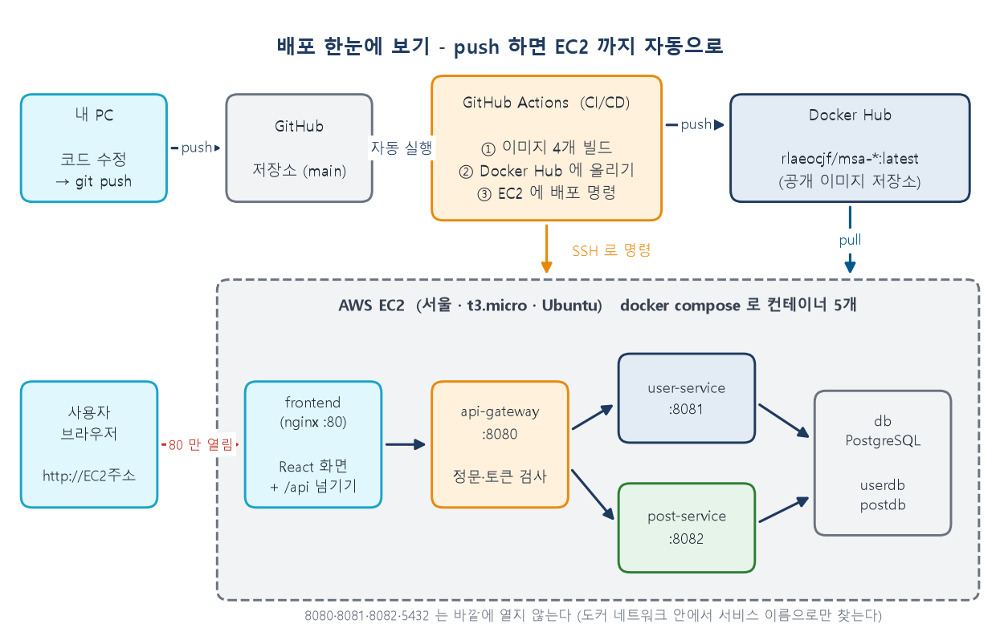

배포 한눈에 보기
git push 한 번이면 이미지 빌드 → Docker Hub → EC2 배포까지 자동으로 이어집니다.

원본(MSA 기초)과 달라진 코드
앱 코드는 거의 그대로이고, 배포용 파일이 더해집니다.
| 파일 | 바뀐 것 |
|---|---|
frontend/src/api.js |
API 주소 http://localhost:8080/api → /api |
frontend/vite.config.js |
개발 서버가 /api 를 localhost:8080 으로 넘기는 proxy |
backend/*/application.yml |
DB 비밀번호를 환경 변수 DB_PASSWORD 로 |
docker-compose.yml, deploy/docker-compose.prod.yml |
컨테이너 시간대 TZ: Asia/Seoul (없으면 글 작성 시각이 UTC) |
| 새 파일 | backend/Dockerfile, frontend/Dockerfile, frontend/nginx.conf, compose 2개, 워크플로 |
교안 목차
장마다 개념 → 따라 하기(화면 캡처) → 확인 순서이고, 확인 문제 답은 부록 B 에 있습니다. (권장 8시간)


실습 코드
Dockerfile, compose 파일, 워크플로를 GitHub 에서 바로 볼 수 있습니다. 한 번에 받으려면 전체 ZIP 이 편합니다.
backend/MSA 기초 과정 서비스 3개 + Dockerfile (서비스 하나를 골라 굽는 공용 파일)frontend/React + Dockerfile(빌드 → nginx) + nginx.conf (/api 를 게이트웨이로)db/init.sqluserdb, postdb 만들기docker-compose.yml내 PC 에서 빌드해서 운영처럼 실행 (http://localhost)deploy/docker-compose.prod.ymlEC2 에서 Docker Hub 이미지를 받아 실행.github/workflows/deploy.ymlpush → 빌드 → Docker Hub → EC2 배포docs/guide/배포 교안 원고 (0~8장, 부록 A·B) → PDF · 웹 교안tools/교안 빌드 (그림 make_figures, 캡처 강조 상자 annotate, PDF build_guide, 웹 build_site).env.example내 PC 용 .env 본보기 (DOCKERHUB_USERNAME)
PDF 교안
웹 교안과 같은 내용입니다. 인쇄하거나 내려받아 볼 때 쓰세요.